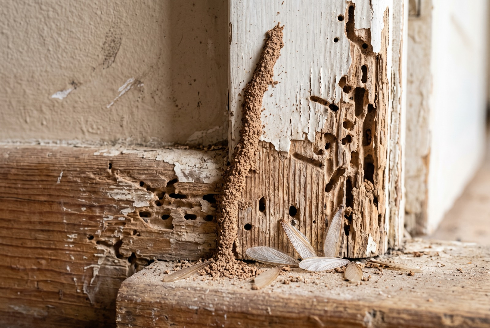

Termite treatment cost in Singapore: signs, methods & price

Spotted mud tubes on your skirting, or timber that sounds hollow when you tap it? That is often the first sign of termites — and in a Singapore flat full of timber, it is worth acting on fast. As a rough guide, termite treatment cost in Singapore runs from about $150–$400 for a localised spot job, with larger infestations costing more. This guide covers the signs of termites, why HDB timber is at risk, the treatment methods that actually work, a real recent RK E&C job price, and why the smart move is to treat before you renovate.
Signs of termites to look for
Termites are quiet. They eat timber from the inside, so by the time damage is visible the colony has usually been active for a while. These are the signs worth checking for around your home:
- Mud tubes. Thin, pencil-width brown tunnels running up walls, along skirting or across door frames. Subterranean termites build these to travel under cover — they are the clearest giveaway.
- Hollow-sounding wood. Tap a door frame, skirting board or built-in panel. If it sounds papery or hollow instead of solid, the timber may be eaten out inside.
- Discarded wings. After a swarm, winged termites shed their wings. Small piles of identical wings on windowsills or the floor near lights are a strong signal a colony is nearby.
- Damaged skirting and door frames. Skirting that looks blistered, sunken or crumbles when pressed; door frames that flake or give way under a thumbnail; paint that bubbles over soft timber.
If you see any of these, don't wait. A small localised problem is far cheaper to deal with than a colony that has spread through your carpentry. Singapore's National Environment Agency has general pest control guidance worth a read if you want the background on how these pests behave.
Why HDB timber is at risk
Termites feed on cellulose, and a Singapore flat is full of it. The parts most at risk are exactly the ones you notice least until they fail:
- Door frames — timber frames sit against masonry and often touch the floor, an easy entry point.
- Skirting — runs along the base of every wall, close to the ground where subterranean termites travel.
- Built-in carpentry — wardrobes, kitchen carcasses and feature panels are large volumes of board, often with hidden backs and undersides.
- Flooring — parquet and some laminate substrates are cellulose too.
Add Singapore's warm, humid climate — which suits subterranean termites — and you have the perfect conditions. Because so much timber is hidden behind finished carpentry or under flooring, a colony can eat through it from the inside long before you see a single mud tube. That is why termite control in an HDB flat is really about catching the problem early and treating the source, not just patching the visible damage.
Termite treatment methods
There is no single "termite spray" that fixes everything. The right method depends on how far the problem has spread. In practice, treatment falls into a few approaches:
Localised / spot treatment
For a contained problem — one door frame, a stretch of skirting, a single affected panel — the affected timber is removed and chemical treatment is applied directly to the area and the surrounding structure. This is the quickest and most affordable option and works well when the infestation is caught early and hasn't spread.
Chemical soil treatment
For a wider or more established infestation, a liquid termiticide is applied to the soil and structural entry points to create a treated zone that the colony must cross. This targets subterranean termites at the source rather than just the timber they've reached, and covers a larger area — so it costs more than a spot job.
Dusting
A termiticidal dust is applied into active galleries and mud tubes. Worker termites carry it back through the colony, spreading it to others. Dusting is often used alongside other methods to reach termites you can't treat directly.
An honest contractor will inspect first, tell you how far it has spread, and match the method to the actual problem — not sell you the biggest programme by default.
How much does termite treatment cost in Singapore?
Pricing depends on the size of the infestation, the area to be treated and the method needed. The table below is anchored to a recent RK E&C job — a localised problem where we removed the affected timber and applied chemical treatment to the area. Treat the ranges as indicative and always confirm a fixed quote after an inspection.
| Job | Price (SGD) | Notes |
|---|---|---|
| Termite treatment — removal + chemical application (recent RK E&C job) | ≈ $350 | Localised area, timber removed & treated |
| Localised / spot treatment | $150 – $400 | Single area, caught early |
| Larger infestation / soil treatment | More — quote on site | Wider area, more product & labour |
| Damaged timber replacement (skirting, door frame) | Added on top | Only after treatment is done |
The recent RK E&C job above came to about $350 for removing the affected timber and applying chemical treatment to the area — a good benchmark for a contained problem. Prices are indicative and depend on the infestation size and the area involved, so the only accurate number comes after someone has looked at it.
What affects the cost
- Area treated. A single door frame is a small job; treatment across several rooms or the whole flat is not.
- Severity. A colony caught early costs far less than one that has spread through carpentry and flooring.
- Method. Spot treatment is cheaper than a full soil-treatment programme with a warranty.
- Follow-on repairs. Replacing damaged skirting, door frames or panels is priced on top of the treatment itself.
Treat before you renovate
This is the part homeowners most often get wrong. If you're about to install new doors, skirting, built-ins or flooring, treat any termite problem first. New timber going in over an active colony just becomes fresh food — and tearing out finished carpentry a few months later to treat what you could have handled up front is an expensive mistake.
A renovation is actually the ideal window. During hacking and stripping, the timber and structure are exposed, so treatment is easier, more thorough and cheaper than working around finished surfaces. If you're planning works, factor termite treatment into the sequence — see our guide to HDB renovation cost in Singapore for how these steps fit together, and how to choose a renovation contractor who plans the order of works properly.
Prevention and warranty
Once you've treated, a few habits keep termites from coming back:
- Fix leaks and keep timber dry — damp wood attracts termites.
- Keep an eye on skirting and door frames near the floor, and re-check after any swarm season.
- Ask about a preventive treatment before new carpentry goes in during a renovation.
On warranty: a localised spot treatment addresses the immediate problem but usually carries little or no long guarantee, because it targets one area rather than the whole colony. Full soil-treatment programmes typically come with a defined warranty period. Always ask your contractor exactly what is covered and for how long before you commit.
Getting it done by RK E&C
RK E&C is a Singapore-registered renovation and handyman company (UEN 202442767D) that handles termite treatment and timber repair in HDB flats and condos island-wide — as a standalone job or as part of a renovation, carpentry and repair package. We inspect first, treat the source, replace damaged timber, and can apply preventive treatment before new doors and skirting go in. You get a fixed price after we've seen the problem.
Send us a photo of the affected area and your postal code and we'll advise you — usually the same day.
Spotted mud tubes or hollow timber?
Send us photos and your postal code. We inspect, treat the source, and give a fixed-price quote — island-wide.
Prices are indicative of the Singapore market in 2026 and not a quotation. Termite treatment cost depends on the infestation size, area and method. Confirm a fixed price after an inspection before work begins. See more RK E&C guides.